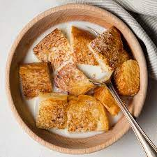

Milktoast

Description
This recipe is pretty weird but it tastes good and was a childhood classic. It is essentially cinnamon toast in a bowl of milk like cereal.
Ingredients
- Slice of Bread
- Cinnamon Sugar
- Milk
- Butter
Steps
- Toast bread to desired level
- Butter toast and put cinnamon sugar on
- Cut toast into small pieces and place in bowl
- Poor milk into bowl